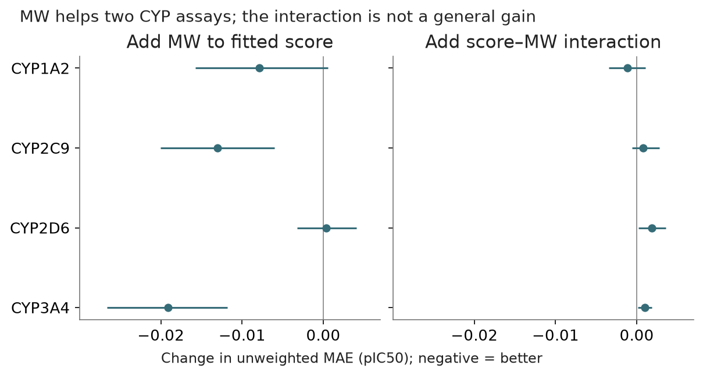

Four-CYP transfer of scalar MW controls
Status: completed · Synthesis updated 2026-09-08. Original dates and immutable protocol history remain in the source evidence.
Question
Does the PXR MW effect recur for direct CYP inhibition?

PNG · SVG · Plotted data · Figure provenance
{kind=link}
{kind=link}
Design and fitted/frozen flow
Existing native protein/ligand/heme inference [frozen] + identity-SMILES MW → training-fold scaling and fitted OLS scalar controls → same-row pIC50 evaluation across CYP1A2, 2C9, 2D6 and 3A4.
Results
Additive MW helps CYP2C9 and CYP3A4; the score–MW interaction does not consistently outperform additive. Same-CYP inhibitor baselines remain stronger overall. Small-MW groups contain only 22 / 11 / 21 / 30 compounds.
Implication and limits
CYP uses unweighted fitting and MAE: supplied std/CI are not justified sampling SE. Do not transfer PXR’s uncertainty floor or potency threshold. This is not a general replication of the PXR effect.
All evidence is retrospective. Historical budgets, splits and raw versus uncertainty-weighted scores must remain distinct.
Source evidence
Original reports and exact tables (historical report links may refer to unbundled files).
{kind=link}
{kind=link}